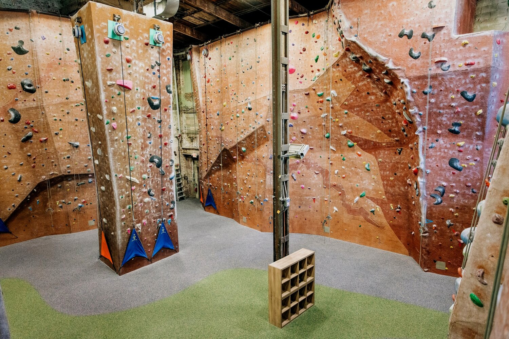

-

Climbing
One of the activities that I enjoy the most in my non-study time is climbing. I started climbing in summer 2022 and have been a regular climber ever since. I do a combination of rope climbng and bouldering. When I was younger I was afraid of height but always liked hiking, climbing allowed me overcome my fear and now I am actually comfortable hanging on a rope few meters above the ground.
-
Music
Music has always played a major role in my life. I have been playing guitar since I was little, and in highschool i was a part of a rock band. I can't imagine a day without listening to some kind of music. You can see me vibing at local concerts.
-
Video Games
There was a time when I knew all the major games that were comming out on weekly basis and played competetive games for couple hours a day. It was a great way of spending time with friends as well as having some kind of competition and rivarly. It could be shooters, card games or some indie titles, we played it all. Nowadays I play mostly multiplayer games as platform to meet with my distant friends.